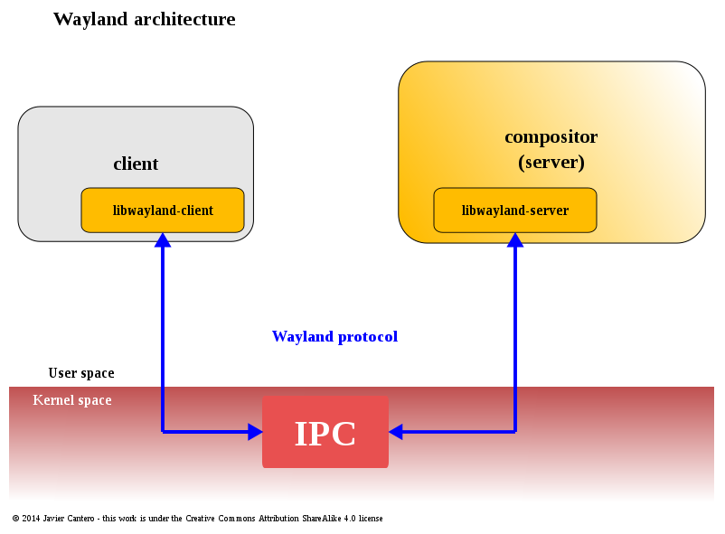

Nízkoúrovňová Architektura a Jádro Grafického Subsystému
Cíl kapitoly: Detailně analyzovat architektonický posun od modelu X11 k Waylandu a rozebrat interní mechanizmy knihovny wlroots, subsystémů linuxového jádra a zpracování asynchronních událostí.
Abychom porozuměli fungování Labwc, musíme nejprve provést dekonstrukci starého modelu X11. V prostředí Xorg fungoval centrální X Server jako prostředník. Pokud klientská aplikace (např. terminál) chtěla vykreslit okno, musela poslat požadavek X Serveru. X Server následně kontaktoval externí Window Manager (Openbox), aby schválil pozici okna. Window Manager poslal odpověď zpět X Serveru, ten kontaktoval Compositor (Picom) pro aplikování stínů a teprve poté byl obraz odeslán na grafickou kartu. Tento neustálý přenos dat mezi procesy (IPC) způsoboval drastické latence, asynchronní anomálie a znemožňoval absolutní kontrolu nad vykreslovací smyčkou.
Wayland tento nepřehledný řetězec kompletně eliminuje. V architektuře Waylandu splývají role X Serveru, správce oken a kompozitoru do jediné monolitické komponenty – **Kompozitoru**. Labwc je tímto koncovým bodem. Komunikace probíhá přímo mezi klientskou aplikací a Labwc skrze unixové sockety pomocí sdílené paměti (shm) nebo instancí `EGLStream` / `Wayland-EGL`. Klientská aplikace si sama vykreslí svůj grafický obsah do sdíleného bufferu v paměti a pouze pošle Labwc zprávu: "Zde je můj nový snímek, zařaď ho do kompozice." Labwc buffer převezme, aplikuje okenní dekorace a pošle data přímo na výstup.

Detailní rozbor technologických vrstev:
1. Knihovna wlroots (Hardwarová abstrakce a správa protokolů)
- Implementace kompletního Wayland kompozitoru od nuly vyžaduje obrovské množství nízkoúrovňového kódu pro obsluhu grafických ovladačů a správu stavů paměti. Labwc tento problém řeší integrací modulární knihovny wlroots. Wlroots nefunguje jako rigidní desktopový framework, ale spíše jako sada jednoúčelových programovacích nástrojů (C knihovna). Implementuje standardní Wayland protokoly (jako je `xdg-shell` pro správu aplikačních oken, `wlr-layer-shell` pro panely a tapety) a poskytuje stabilní API pro správu ploch, transformací a textur. Labwc definuje logiku, jak se mají okna chovat, zatímco wlroots provádí těžkou práci na úrovni komunikace s ovladači Mesa.
2. Subsystém libinput (Zpracování a multiplexování vstupních událostí)
- Sběr a interpretace hardwarových vstupů (stisky kláves, souřadnice myši, multitouch gesta z touchpadů) jsou realizovány skrze kernelový subsystém evdev zapouzdřený do knihovny
libinput. Labwc otevírá soubory zařízení v `/dev/input/` s využitím privilegovaného démona (případně skrze `seatd` pro správu relací). Když uživatel vygeneruje událost, libinput provede filtraci šumu, aplikuje akceleraci kurzoru a předá událost Labwc. Kompozitor v reálném čase propočítá prostorovou geometrii a zjistí, které okno (povrch - *wl_surface*) se nachází na daných souřadnicích. Událost je následně serializována a odeslána konkrétnímu klientskému procesu přes Wayland protokol. 3. Kernelové backendy DRM (Direct Rendering Manager) a KMS (Kernel Mode Setting)
- Pro přímý zápis na grafický výstup bez mezivrstev využívá Labwc moderní linuxová rozhraní jádra. DRM umožňuje kompozitoru alokovat buffery přímo ve VRAM grafické karty (pomocí mechanismu `GBM` - Generic Buffer Management). KMS má na starosti konfiguraci hardwaru – nastavení rozlišení, obnovovací frekvence a barevné hloubky monitoru. Samotné skládání obrazu (blitting textur oken na finální scénu) probíhá hardwarově akcelerovaně přes **OpenGL ES 2.0 / 3.0** nebo **Vulkan** prostřednictvím open-source ovladačů projektu Mesa. CPU je v tomto procesu téměř stoprocentně uvolněno, veškeré operace provádí GPU v reálném čase.